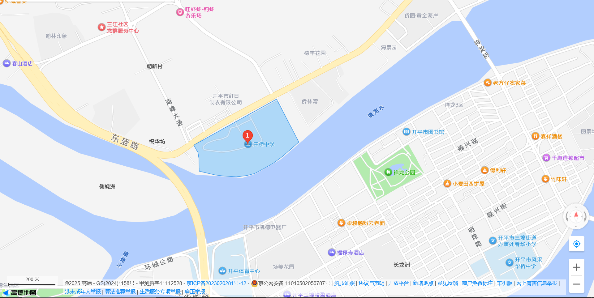

首先，欢迎各位开侨新学子们！到达世界最高层！
本文是我在开侨懒懒散散地生活了近三个星期后，总结出来的一点点生活经验，希望能帮助到大家在开侨的生活中解决些问题为什么想不开来开侨呢，下为目录
1.吃饭
民以食为天嘛
但是我经历的都是被大削过后的开侨食堂（天塌了
1.1 食堂
我认为开侨的饭菜还是挺丰富的（其实好像每天都固定的菜式），一般午餐晚餐的窗口有：
- 生命体征维持餐：￥7.8，无肉菜
- 大众餐： ￥10，一素一荤
- 西餐：￥13-15不等，有鸡排，牛排，鸡蛋等按照搭配来收费
- 帅焖锅（
好中二的名字）：￥12-15不等，有肉有荤 - 火鸡面： ￥12，有鸡排/鸡腿选择，不过有同学反应较辣 ，我倒是觉得还好
- 小吃：￥3/牛杂串，还有玉米等，但是我没买过（ 早餐和宵夜都有：
- 一些好吃的面包（现早餐特供）
我没吃过，我不爱吃（挑食.jpg） - 炒面，￥4/碗，好吃，爱吃，这是真推荐
- 还有些其他的如香肠和煎饼之类的宵夜特供，￥4-5
此外，食堂还有些像是西米露，双皮奶，柠檬茶之类的，不过都在￥7往上（
我吃不起不过需要注意的是，饭堂的座位真的很有限（比一中小一半的感觉） 你需要跑快点抢座位.jpg
1.2 小卖部
说到这里我就不得不提上学期开平市全部高中的零食禁止出售，开侨的炸鸡（这不应该是在食堂一part里面的吗？）
导致现在开侨的食物储备就是路边一条，小卖部也只剩下一点饮料、面包和一点小零食
被资本做局了.mp4
不过有乐观消息是，也许下个学期整改完后会回归（最希望
1.3 食堂/小卖部开放时间
一般在
- 早上起床（大概在5：30开始）~第一节课上课前
- 中午下课~午睡
- 下午放学~晚修
- 第一节晚修下课为宵夜时间（你的一天这是最后一个时间能买点吃的、喝的了
至于小卖部，则就是到第二节晚修上课都可以去啦（
不会想说午休时间上课时间去吧，不会吧不会吧
2.交通
开侨交通这么便利还有写的必要吗
众所周知，开侨地处市区，交通便利导致大家可能根本没有想过出行相关的时间之类的
不过我还是列举几个常见的交通方式（飞的？
2.1 公交
我平时通过公交出行，所以先来这个
开侨一出门背对大门口的方向的你的右手边就有一个公交站，其路线有613 616 611
613路发车时间与过站
星期一至五： 【八一，头班：06：00 尾班：19：03】 【金鸡，头班：06：00 尾班：19：05】星期六、日： 【八一，头班：06：00 尾班：19：12】 【金鸡，头班：06：00 尾班：19：12】
八一站、埒冲、三联、牛母湾、芦阳、三门里、五龙市场、树溪路口、凤阳、龙背、严边新村、公福亭、凤塘里、第二人民医院、乌金、大兴里、儒北楼、边领村、龙溪村、马降龙路口、百合墟口、北降、齐塘、蚬冈中学、机电学校、蚬冈市场、东成里、蚬冈医院、锦江里路口、禾眠、风洞村委、南联、企岭、广居村、大同、横冈、凤来村、金鸡市场、金鸡
616路发车时间与过站
【兴时年发车时间：不入百合06：30、07：50、09：10、10：50、11：50、13：30、14：30、16：20、17：10；入百合07：00、10：10、15：20】【义兴发车时间：不入百合07：50、09：10、10：30、12：10、13：10、14：50、15：50、17：35、18：30；入百合08：35、11：40、17：00】
兴时年、港口中学、银海市场、建设局、卫东管区、边检站、金中广场、忠源中学、市政府、购物街中、祥苑邮政局、华润万家、金侨城、中医院、侨园邮政局、侨园、三江大道南、三江大道中、中颐海伦堡、东盛里、八一站、古社、福贤里、三联、三门里、龙背、公福亭、大兴里、民社、三姑楼、茅冈、宝兴
611路发车时间与过站
運行時間： 【中心醫院】6：25-20：20 、【開僑中學】6：25-20：40
中心医院西门站、东汇城、中心医院、富景花园、宝堤湾畔、宝丽花园宝翠园、宝堤中路、宝源南路、中医院、西郊路、曙光西、曙光中、东兴路口、城市广场、农金大厦、电信局、银海市场、建设局、卫东管区、中山市场、新地村、果园村、新昌市场、新安路口(西)、东河小学、风采中学、祥荻桥头、祥荻中、侨园(三江大道)、侨园(侨园路)、为星药业、开侨中学、祝华坊、东盛里、八一站
2.2 步行/骑车/汽车
一般来说，你出了校门口在大路上只有两个方向可以选择
下附地图

3.宿舍
一般都会看这part吧
走读生帮忙买条肠粉不？
3.1 宿舍分配
开侨一共好像有六、七栋宿舍，但我没了解过女生宿舍，所以在此只讨论男生宿舍：
男生宿舍分为旧伟伦楼，新伟伦楼以及兰杰纪念楼
值得注意的是，旧伟伦纪念楼虽然最旧，设施烂，一间房12人睡，但是它就在饭堂上面，什么地位无需多言
新伟伦楼为清北班二类宿舍与高一宿舍的划分（似乎是这样），在旧伟伦楼之前，下楼3分钟到南楼，个人认为这是最均衡的
兰杰纪念楼最新，为清北班前80人住（就是婆罗门吧），但是离南楼/教学楼、食堂都是最远的，其配套设施也是最高级的
3.2 宿舍中的规则怪谈
如果你在开平市金山中学就读过，那么你一定对其宿舍管理制度非常熟悉了（我熟悉≠我执行），同样的，开侨中学也有着宿舍管理制度
不过，开侨的宿舍管理制度与金山差不多，却比金山松太多太多，当然也有些很大差异，你可以注意下：
-
你可以带东西回去吃
-
你的早上可以不按照起床铃，起，都可以起（是不是又想卷？是不是又想卷？？是不是又想卷？？？
-
起床后差不多离上课还有10分钟左右就会吹哨（
吹的真的很难听 -
吹完哨子后会断空调电
-
下午放学空调电也不会开（
hero死辣 -
晚间宿舍统一断电
-
宿管中有个叫狗王的，已经流传20多年了，每次临近放假或者心事不顺的时候，请大喊狗王吃屎
总之相对于金山，开侨的宿舍管理制度还是非常自由的现存办法甚至还是加强过的
4.安检
开平应该没有高中没有安检吧？
开侨中学的安检据一中的同学说很强，据开侨学长说还是很颠的你有时带一盒牛奶也会响，不过研学时似乎是可以不过安检门的（如果你有带手机的念头，祝你好运，被抓了参考金山做法）
暂且就先写到这里，如有遗漏，请帮忙补充
To-Do
- 吃饭
- 食堂
- 小卖部
- 食堂/小卖部开放时间
- 交通
- 公交
- 步行/骑车/汽车
- 宿舍
- 宿舍分配
- 宿舍中的
规则怪谈
- 安检
- 教学楼
- 娱乐活动
- 其他